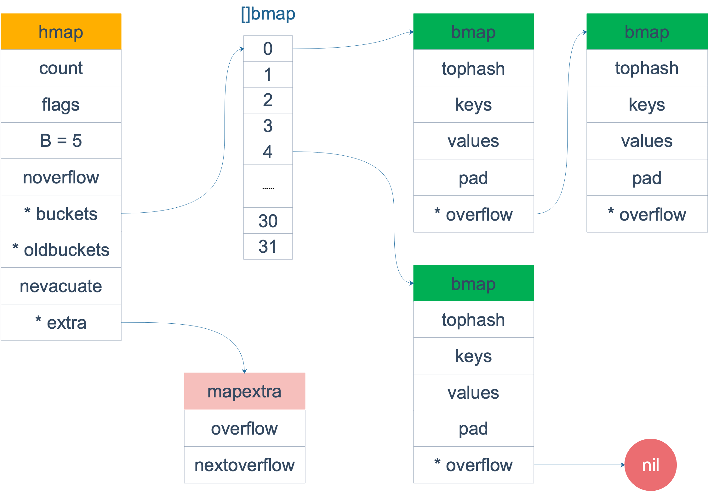
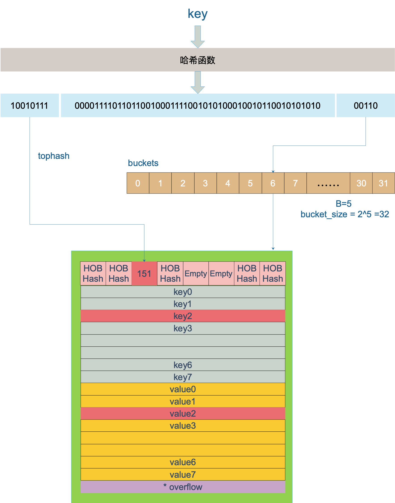

Ch01-GoLang 之 slice 和 map
September 1, 2024
slice，map
slice #
slice 的底层数据是数组，slice 是对数组的封装，它描述一个数组的片段。两者都可以通过下标来访问单个元素。
数组是定长的，长度定义好之后，不能再更改。在 Go 中，数组是不常见的，因为其长度是类型的一部分，限制了它的表达能力，比如 [3]int 和 [4]int 就是不同的类型。
而切片则非常灵活，它可以动态地扩容。切片的类型和长度无关。
数组就是一片连续的内存， slice 实际上是一个结构体，包含三个字段：长度、容量、底层数组。
type slice struct {
array unsafe.Pointer // 元素指针
len int // 长度
cap int // 容量
}
map #

与其他语言不同，golang 的每个 bucket 保存了多个 key/value （最多可以有 8 个 k-v 对）。
key 经过哈希计算后得到哈希值，低 B 个 bit 位用来确定落到落到具体哪个 buckets 数组的槽位，高 8 位用来找具体 bucket 中的 key-value

增量扩容 #
触发时机
当 map 中的元素数量（count）达到装载因子（loadFactor）与 map 容量（bucket 数量，记为 B）的乘积时，会触发增量扩容。Go 语言中 map 的装载因子默认为 6.5，即当 count >= 6.5 * 2^B 时，会进行增量扩容。
实际操作过程
- 分配新内存：创建一个新的、更大的 map 结构，新的容量通常是原容量的两倍（即 2^(B + 1) 个 bucket）。
- 数据迁移：将原 map 中的键值对重新计算哈希值并分配到新的 bucket 中。由于新的 bucket 数量增加，键值对在新的哈希表中分布会更加均匀。在迁移过程中，原 map 仍然可以进行读写操作，但写操作会触发更复杂的处理逻辑以保证数据一致性。具体来说，写操作会先将新的键值对写入到一个临时的 overflow bucket 中（如果当前 bucket 已满），等迁移完成后再将这些临时数据合并到新的 map 结构中。
等量扩容 #
触发时机
当 map 中的 overflow bucket 过多，导致 map 的效率降低时，会触发等量扩容。具体来说，如果 map 中 overflow bucket 的数量超过了 bucket 数量（2^B），并且装载因子小于 6.5，就会进行等量扩容。这种情况下，虽然 map 的元素数量没有达到增量扩容的阈值，但由于 overflow bucket 过多，使得查找和插入操作的时间复杂度增加，因此需要进行等量扩容来优化性能。
实际操作过程
- 分配新内存：创建一个与原 map 容量相同的新 map 结构（即同样是 2^B 个 bucket）。
- 数据整理：将原 map 中的键值对重新计算哈希值并分配到新的 bucket 中。与增量扩容不同的是，等量扩容不会增加 bucket 的数量，但会重新组织键值对，将分散在 overflow bucket 中的数据尽量合并到正常的 bucket 中，以减少 overflow bucket 的使用，从而提高 map 的操作效率。在这个过程中，同样允许原 map 进行读写操作，写操作的处理逻辑与增量扩容时类似，先将新数据写入临时 overflow bucket，待整理完成后再合并。